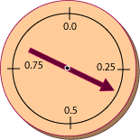

QUESTION 11:
Say that you want random doubles in the range 0.0 up to (but not including) 10.0.
How can you get that range using rand.nextDouble()?
Assume that rand is a Random object.


Yes. Random floating point numbers are necessary for simulations and in mathematical, scientific, and engineering programming.
Random Methods
Here are some more methods of the Random class:
float nextFloat()
— Returns a pseudorandom, floating point value in the range 0.0 up to but not including 1.0.
double nextDouble()
— Returns a pseudorandom, double-precision value in the range 0.0 up to but not including 1.0.
double nextGaussian()
— Returns a pseudorandom, double-precision value drawn from a Gaussian distribution
(also called a "normal" distribution or a "bell-shaped curve".) The mean of the distribution
is 0.0 and the standard deviation is 1.0.

Notice that nextFloat() and nextDouble() output random floating point
values in the range [0.0, 1.0),
all values starting at zero, up to but not including 1.0.
You might think that it is strange not to include 1.0, but this is actually convenient, and is what is done by nearly all floating point random number generators.
To visualize a random floating point generator, think of a spinner centered on a circle with a circumference of one foot. To generate a random float, spin the pointer, then measure the distance along the circle, from the zero mark. Measure the distance using "hundredths of a foot". The distance is the randomly selected float in hundredths.
If the circumference is exactly one foot, then the "0.0" mark on the circle and the "1.0" mark on the circle would be the same. This might be awkward. But 1.0 is excluded from the range so the problem is avoided.
Say that you want random doubles in the range 0.0 up to (but not including) 10.0.
How can you get that range using rand.nextDouble()?
Assume that rand is a Random object.